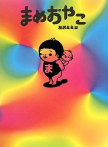

友沢 ミミヨ（ともざわ・みみよ 本名 友沢実千代）
高松高校 昭和60年卒
プロフィール
明治大学在学中に以前より交流のあった内田春菊のアシスタントを務め、ほどなくして楽器店の広告カットにてイラストレーターとしてデビュー
1990年頃から92年まで、福間未紗らとともにフォーク・ユニットRISU（リス）として活動

1992年 『ガロ』（青林堂）で漫画家としてデビュー
1995年 単行本『いもほり』（青林堂）出版
1999～2004年 フランス滞在。アトリエdokidokiにて活動
2000年 『またたび浴びたタマ』村上春樹著（文芸春秋）全イラスト担当
2001年 『きのこ旅行』（青林工藝舎）出版
同年 ポンピドゥセンター（国立近代美術館）から、子どものための絵本『viens chezmoi!!!』（Centre pompidou）をGlasexxと共著、出版
2005年 ニューヨークのDinter fine artでのグループ展参加
同年 『原始式教育入門まめおやじ』（パロル舎）出版
2007年 香港のHong kong arts centre、日本オルタナネイティブ漫画展参加
2008年 『まめおやこ』（長崎出版）出版
ギャラリーart wad's（渋谷）、LOV-LAV（原宿）、Trance pop（京都）、Au regard moderne(paris)個展、手芸グループ展、Tシャツ展、Jim O'roukeのCDジャケット等、幅広い活動を続けている。
Wikipediaでのプロフィールはこちら。